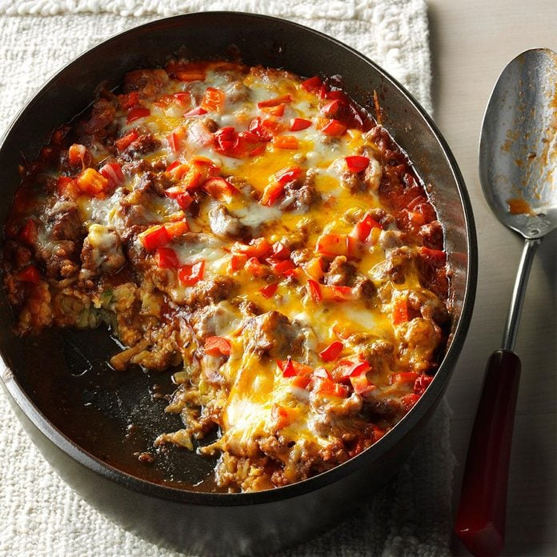

Zucchini Pizza Casserole

Description
A layer of softly shredded zucchini, sauce, cheese,
pepperoni, and sliced bell pepper is placed on top
of the traditional toppings. Try out your favorite
toppings, but be careful not to overfill the crust
because it might make it soggy.
Ingredients
- 4 cups shredded zucchini (2 medium)
- 4 large eggs, lightly beaten
- ¼ cup finely chopped onion
- ¼ cup grated Parmesan cheese
- 2 tablespoons all-purpose flour or gluten-free all-purpose flour
- 1 cup canned crushed tomatoes
- ¼ cup thinly sliced fresh basil
- 1 clove garlic, minced
- ¼ teaspoon salt
- ¼ teaspoon pepper
- 1 cup shredded part-skim mozzarella cheese
- ½ cup thinly sliced green bell pepper
- 1 ounce pepperoni slices (1/4 cup)
Steps
- Preheat oven to 400 degrees F. Coat a 9-by-13-inch
baking dish with cooking spray. Place zucchini in
the center of a clean kitchen towel and wring out
the excess moisture. Transfer to a bowl and combine
with eggs, onion, Parmesan and flour. Pour the mixture
into the prepared baking dish and spread into an
even layer. Bake until set and beginning to brown
around the edges, about 30 minutes.
- Meanwhile, combine tomatoes, basil, garlic, salt and
pepper in a medium bowl. When the zucchini crust is
done, spread the sauce evenly over the top. Top with
mozzarella, bell pepper and pepperoni. Return to the oven
and bake until the cheese is melted and the sauce is
heated through, about 15 minutes. Let cool for about
5 minutes before serving.